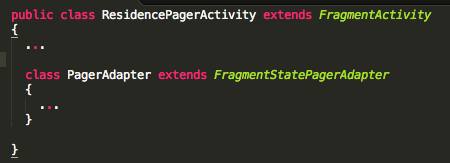
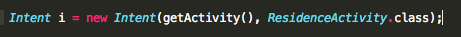
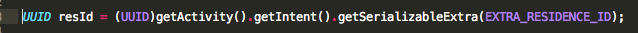

Residence List Deletion & ViewPager
In this lab we introduce a facility to select and delete a subset of residences in the list view. The selected items need not be contiguous. Also, introduce a new feature to support 'swipe' interaction. This allows a user to swipe left/right to page through the residence list.
Preview


Resources (Contextual Menu)
Continue building the MyRent app that you developed in the previous lab.
For reference, we are providing a version here of the completed MyRent-06:
git clone https://github.com/wit-computing/myrent-06.git
We will require this string resource:
<string name="delete_residence">Delete Residence</string>
Add a new context menu resource.
Filename: res/menu/residence_list_context.xml
<menu
xmlns:android="http://schemas.android.com/apk/res/android">
<item android:id="@+id/menu_item_delete_residence"
android:icon="@android:drawable/ic_menu_delete"
android:title="@string/delete_residence" />
</menu>
We would like the selected residences to appear highlighted for ease of identification.
- Create a new folder (directory) in res.
- It may be necessary to switch between perspectives in order that drawable renders properly.
Add the following xml file to drawable:
Filename: res/drawable/background_activated.xml
<?xml version="1.0" encoding="utf-8"?>
<selector xmlns:android="http://schemas.android.com/apk/res/android" >
<item
android:state_activated="true"
android:drawable="@android:color/darker_gray"
/>
</selector>
Activate the background_activated state by adding the following attribute to res/layout/list_item_residence.xml.
- Failure to introduce this line of code will result in selected residence in the list remaining highlighted only as long as the mouse button is pressed.
android:background="@drawable/background_activated"
Here is the complete file:
Filename: list_item_residence.xml
<RelativeLayout xmlns:android="http://schemas.android.com/apk/res/android"
android:layout_width="match_parent"
android:layout_height="match_parent"
android:background="@drawable/background_activated"
android:orientation="vertical">
<CheckBox
android:id="@+id/residence_list_item_isrented"
android:layout_width="wrap_content"
android:layout_height="wrap_content"
android:gravity="center"
android:layout_alignParentRight="true"
android:enabled="false"
android:focusable="false"
android:padding="4dp"
/>
<TextView
android:id="@+id/residence_list_item_geolocation"
android:layout_width="match_parent"
android:layout_height="wrap_content"
android:layout_toLeftOf="@id/residence_list_item_isrented"
android:textStyle="bold"
android:paddingLeft="4dp"
android:paddingRight="4dp"
/>
<TextView
android:id="@+id/residence_list_item_dateTextView"
android:layout_width="match_parent"
android:layout_height="wrap_content"
android:layout_below="@id/residence_list_item_geolocation"
android:layout_toLeftOf="@id/residence_list_item_isrented"
android:paddingLeft="4dp"
android:paddingRight="4dp"
android:paddingTop="4dp"/>
</RelativeLayout>
Add string resource:
<string name="delete_residence">Delete Residence</string>

ResidenceListFragment
Add imports:
import android.view.ActionMode;
import android.widget.AbsListView.MultiChoiceModeListener;
Change class signature by implementing MultiChoiceModeListener:
public class ResidenceListFragment extends ListFragment implements OnItemClickListener, AbsListView.MultiChoiceModeListener
Add a ListView field:
private ListView listView;
In onCreateView initialize the listView and set listener:
listView = (ListView) v.findViewById(android.R.id.list);
listView.setChoiceMode(ListView.CHOICE_MODE_MULTIPLE_MODAL);
listView.setMultiChoiceModeListener(this);
Implement MultiChoiceModeListener methods:
/* ************ MultiChoiceModeListener methods (begin) *********** */
@Override
public boolean onCreateActionMode(ActionMode actionMode, Menu menu)
{
MenuInflater inflater = actionMode.getMenuInflater();
inflater.inflate(R.menu.residence_list_context, menu);
return true;
}
@Override
public boolean onPrepareActionMode(ActionMode mode, Menu menu)
{
return false;
}
@Override
public boolean onActionItemClicked(ActionMode mode, MenuItem menuItem)
{
switch (menuItem.getItemId())
{
case R.id.menu_item_delete_residence:
deleteResidence(actionMode);
return true;
default:
return false;
}
}
private void deleteResidence(ActionMode mode)
{
for (int i = adapter.getCount() - 1; i >= 0; i--)
{
if (listView.isItemChecked(i))
{
portfolio.deleteResidence(adapter.getItem(i));
}
}
mode.finish();
adapter.notifyDataSetChanged();
}
@Override
public void onDestroyActionMode(ActionMode mode)
{
}
@Override
public void onItemCheckedStateChanged(ActionMode mode, int position, long id, boolean checked)
{
}
/* ************ MultiChoiceModeListener methods (end) *********** */
Model Layer
Ensure a method exists in models class Portfolio to delete a residence :
public void deleteResidence(Residence c)
{
residences.remove(c);
}
Test your work by creating a number of residences and exercising a range of deletion options, for example:
- create a single residence and delete it
- create three residences and delete the first and last
- add some more residences and delete all.
ViewPager
Here we shall refactor MyRent by incorporating a ViewPager.
- This will allow us to swipe between pages as illustrated in Figure 1.
The refactoring is shown in Figure 2 where the changes are highlighted: compare this object diagram to that in the previous step and you will see that the main change is the replacement of ResidenceActivity with a new class ResidencePagerActivity.

Resources (ViewPager)
Create a new file ids.xml in res/values folder which will be used to store viewPager id numbers:
Filename: ids.xml
<resources>
<item type="id" name="viewPager" />
</resources>
Change the ResidenceActivity node in the manifest file to ResidencePagerActivity.

<activity
android:name=".activities.ResidencePagerActivity"
android:label="@string/app_name">
<meta-data
android:name="android.support.PARENT_ACTIVITY"
android:value=".activities.ResidenceListActivity"/>
</activity>
Create ResidencePagerActivity
Delete ResidenceActivity and replace with ResidencePagerActivity, the code for which follows:
Filename: ResidencePagerActivity.java
package org.wit.myrent.activities;
import android.os.Bundle;
import android.support.v4.app.FragmentActivity;
import android.support.v4.view.ViewPager;
public class ResidencePagerActivity extends FragmentActivity
{
private ViewPager viewPager;
@Override
public void onCreate(Bundle savedInstanceState)
{
super.onCreate(savedInstanceState);
}
}
This file is necessary because ViewPager requires a resource id.
- ViewPager is a fragment container and so requires a resource id.
Create and show ViewPager:
- Add this code to ResidencePagerActivity.onCreate following the call to super.onCreate.
- This creates a view programatically.
viewPager = new ViewPager(this);
viewPager.setId(R.id.viewPager);
setContentView(viewPager);
Import:
import org.wit.myrent.R;
Next we introduce code to facilitate retrieval of views that are required as a user swipes left or right.
Introduce instance variables for a list of residences and portfolio:
private ArrayList<Residence> residences;
private Portfolio portfolio;
Add this private method to obtain a reference to the list of references stored in the model layer:
private void setResidenceList()
{
MyRentApp app = (MyRentApp) getApplication();
portfolio = app.portfolio;
residences = portfolio.residences;
}
Invoke setResidenceList immediately following setContentView in onCreate.
Add this private class at the end of ResidencePagerActivity.
class PagerAdapter extends FragmentStatePagerAdapter
{
private ArrayList<Residence> residences;
public PagerAdapter(FragmentManager fm, ArrayList<Residence> residences)
{
super(fm);
this.residences = residences;
}
@Override
public int getCount()
{
return residences.size();
}
@Override
public Fragment getItem(int pos)
{
Residence residence = residences.get(pos);
Bundle args = new Bundle();
args.putSerializable(ResidenceFragment.EXTRA_RESIDENCE_ID, residence.id);
ResidenceFragment fragment = new ResidenceFragment();
fragment.setArguments(args);
return fragment;
}
}
Ensure this new class is contained within ResidencePagerActivity as shown here:

Change the signature of ResidencePagerActivity to the following:
public class ResidencePagerActivity extends FragmentActivity implements ViewPager.OnPageChangeListener
Official documentation on ViewPager.OnPageChangeListener is available here.
This change will trigger errors that may be eliminated by using QuickFix to implement the required interface methods:
@Override
public void onPageScrolled(int position, float positionOffset, int positionOffsetPixels)
{
}
@Override
public void onPageSelected(int position)
{
}
@Override
public void onPageScrollStateChanged(int state)
{
}
We are only interested in full implementation of onPageScrolled. Here it is:
@Override
public void onPageScrolled(int arg0, float arg1, int arg2)
{
info(this, "onPageScrolled: arg0 "+arg0+" arg1 "+arg1+" arg2 "+arg2);
Residence residence = residences.get(arg0);
if (residence.geolocation != null)
{
setTitle(residence.geolocation);
}
}
The method info is implemented in the helpers folder and may be imported in a similar manner as previously in, for example, ResidenceFragment.
This last feature is illustrated in Figure 1 below.

Next add a PageAdapter instance variable:
private PagerAdapter pagerAdapter;
- Instantiate pagerAdapter in onCreate
- Pass the new object as an argument to ViewPager.setAdapter.
- Register the OnPageListener
- The following 3 lines of code should be located following the invocation of setResidenceList
pagerAdapter = new PagerAdapter(getSupportFragmentManager(), residences);
viewPager.setAdapter(pagerAdapter);
viewPager.addOnPageChangeListener(this);
These are the imports required. Note that in some cases more than one option existed.
package org.wit.myrent.activities;
import android.os.Bundle;
import android.support.v4.app.Fragment;
import android.support.v4.app.FragmentActivity;
import android.support.v4.app.FragmentManager;
import android.support.v4.app.FragmentStatePagerAdapter;
import android.support.v4.view.ViewPager;
import org.wit.myrent.R;
import org.wit.myrent.app.MyRentApp;
import org.wit.myrent.models.Portfolio;
import org.wit.myrent.models.Residence;
import java.util.ArrayList;
import static org.wit.android.helpers.LogHelpers.info;
Integrate ResidencePagerActivity
To date in ResidenceListActivity.onListItemClick:
- When a list item is clicked the ResidenceActivity is started.
We now wish to start ResidencePagerActivity:
- To do so, in ResidenceListFragment, replace the following code:

with this:
Intent i = new Intent(getActivity(), ResidencePagerActivity.class);
In ResidenceListFragment, replace any other references to ResidenceActivity with ResidencePagerActivity.
Run MyRent and click on any element in the list: this should open the associated details view.
- You should be able to swipe left and right.
- Should you have difficulty doing so on an emulator, try it on a physical device.
Observe, however, that irrespective which residence on the list is pressed, the first on the list is displayed in the details view. This will now be fixed by implementing a method setCurrentItem in ResidencePagerActivity:
/*
* Ensure selected residence is shown in details view
*/
private void setCurrentItem()
{
UUID res = (UUID) getIntent().getSerializableExtra(ResidenceFragment.EXTRA_RESIDENCE_ID);
for (int i = 0; i < residences.size(); i++)
{
if (residences.get(i).id.toString().equals(res.toString()))
{
viewPager.setCurrentItem(i);
break;
}
}
}
An import statement is necessary for the UUID:
import java.util.UUID;
Invoke setCurrentItem at the end of ResidencePagerActivity.onCreate.
Here is a brief description of setCurrentItem:
- We simply obtain the id of the residence displayed in the details view from the activity intent,
- then iterate through the list of residences to find a match
- and having found a matching residence, invoke setCurrent item using the index position of the residence object as an argument.
Here is the final onCreate:
@Override
public void onCreate(Bundle savedInstanceState)
{
super.onCreate(savedInstanceState);
viewPager = new ViewPager(this);
viewPager.setId(R.id.viewPager);
setContentView(viewPager);
setResidenceList();
pagerAdapter = new PagerAdapter(getSupportFragmentManager(), residences);
viewPager.setAdapter(pagerAdapter);
viewPager.setOnPageChangeListener(this);
setCurrentItem();
}
For reference, the complete list of imports is provided below:
import java.util.ArrayList;
import java.util.UUID;
import org.wit.myrent.R;
import org.wit.myrent.app.MyRentApp;
import org.wit.myrent.models.Portfolio;
import org.wit.myrent.models.Residence;
import android.os.Bundle;
import android.support.v4.app.Fragment;
import android.support.v4.app.FragmentActivity;
import android.support.v4.app.FragmentManager;
import android.support.v4.app.FragmentStatePagerAdapter;
import android.support.v4.view.ViewPager;
import static org.wit.android.helpers.LogHelpers.info;
ResidenceFragment
One final item needs attention. Replace this line in ResidenceFragment:

with this:
UUID resId = (UUID)getArguments().getSerializable(EXTRA_RESIDENCE_ID);
This last line of code extracts the current residence id from the Bundle object that was created in the PagerAdapter.getItem method which is located in the file ResidencePagerActivity.
- There we added a fragment argument to the Bundle object. The value of this argument is the current residence id.
- See here for a brief summary of fragment arguments taken from the Android Book by Hardy & Philips:

Build and lauch the app on an emulator or device and check the functionality we have introduced in this lab.